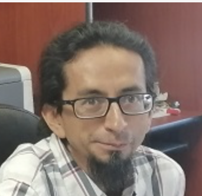
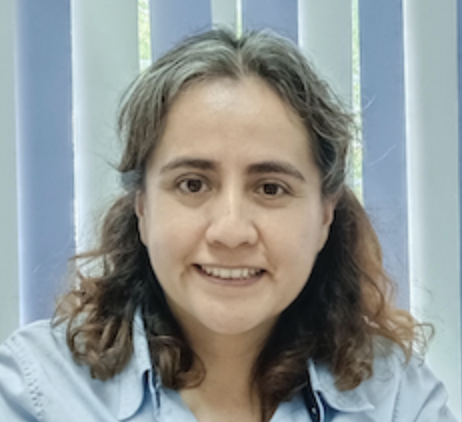
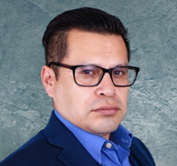
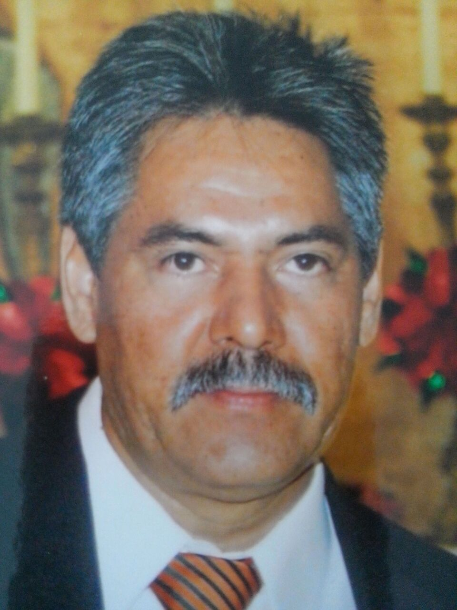
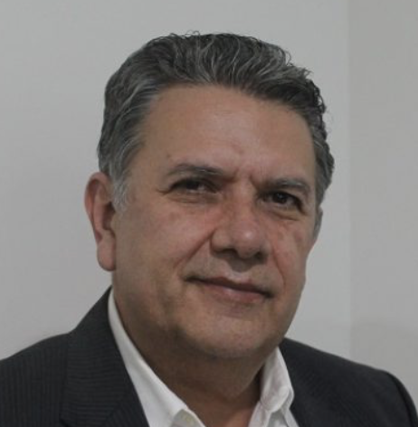
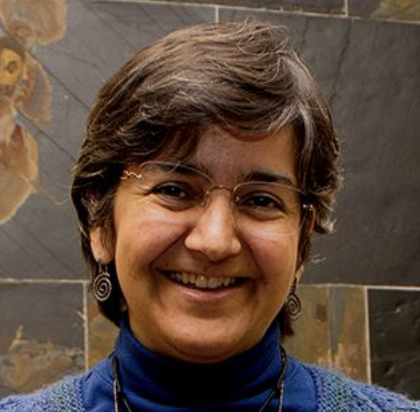
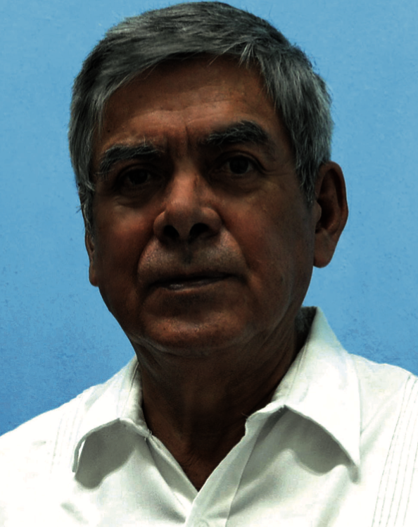
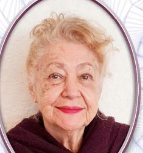
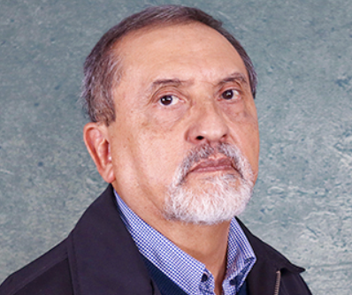
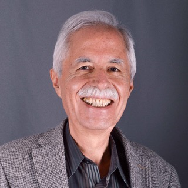

Miembros exprofeso
Por cargo
La Presidencia y la Vicepresidencia de la DPyC son miembros exprofeso del CTC durante su mandato (2025–2027).
 Presidencia
Presidencia
Isabel Pedraza
Presidenta de la DPyC · Miembro exprofeso del CTC
Benemérita Universidad Autónoma de Puebla · Mandato 2025–2027
Vicepresidencia
Humberto Maury
Vicepresidente de la DPyC · Miembro exprofeso del CTC
Mandato 2025–2027
Representantes institucionales
19 instituciones
Los representantes de cada institución miembro forman parte del CTC. Para actualizar un representante escríbenos aquí.
| Institución | Representante ante el CTC |
|---|---|
Benemérita Universidad Autónoma de Puebla |
AR Alfonso Rosado |
Benemérita Universidad Autónoma de Puebla |
LD Lorenzo Díaz Cruz |
CINVESTAV |
ED Eduard De La Cruz Burelo |
CINVESTAV-Mérida |
GC Guillermo Contreras |
ESFM – Instituto Politécnico Nacional |
Por confirmar |
Universidad Autónoma de San Luis Potosí |
MK Mariana Kirbash |
Universidad de Colima |
AA Alfredo Aranda |
Universidad de Guanajuato |
DD David Delepine |
Universidad de Guadalajara |
VC Víctor Manuel Castillo |
Universidad Michoacana de San Nicolás de Hidalgo |
AR Alfredo Raya |
UNAM – FES Cuautitlán |
RG Ricardo Gaitán |
UNAM – Instituto de Ciencias Nucleares |
AA Alexis Aguilar-Arevalo |
UNAM – Instituto de Física |
JE Jens Erler |
UNAM – Facultad de Ciencias |
GM Gabriela Murguía |
Universidad Iberoamericana |
SC Salvador Carrillo Moreno In memoriam |
Universidad Autónoma de Chiapas |
KC Karen S. Caballero Mora |
Universidad Autónoma del Estado de Hidalgo |
RN Roberto Noriega Papaqui |
Universidad de Sonora |
JB José F. Benítez |
Universidad Autónoma de Sinaloa |
IL Ildefonso León Monzón |
Ex-presidentes · Miembros ex-oficio
21 miembros
Todos los ex-presidentes de la DPyC son miembros ex-oficio del CTC. Consulta el listado completo con sus periodos.

Juan Barranco Monarca
2023–2025

Karen Salomé Caballero Mora
2021–2023
Salvador Carrillo Moreno (QEPD)
2020–2021

Eduard de la Cruz Burelo
2018–2020
Arturo Fernández Téllez
2016–2018

Mauro Napsuciale Mendivil
2014–2016
Humberto Salazar Ibargüen
2012–2014
Guillermo Contreras
2010–2012
Alejandro Ayala Mercado
2008–2010
Heriberto Castilla
2006–2008

Luis Manuel Villaseñor Cendejas
2004–2006

Myriam Mondragón Ceballos
2002–2004
Justiniano Lorenzo Díaz Cruz
2000–2002
Gerardo Herrera Corral
1998–2000
Juan Carlos d'Olivo Saez
1996–1998
Luis Fernando Urrutia Ríos
1994–1996

Arnulfo Zepeda Domínguez (QEPD)
1992–1994

Sara Rebeca Juárez Wysozka
1990–1992

Miguel Ángel Pérez Angón
1988–1990

Manuel Torres
1987–1988

Rodrigo Huerta Quintanilla
1986–1987 · Primer presidente